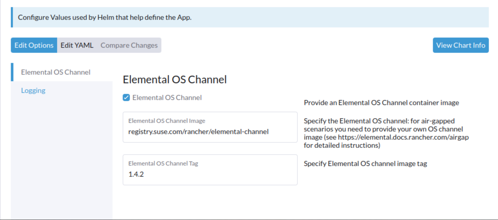

|
Este documento foi traduzido usando tecnologia de tradução automática de máquina. Sempre trabalhamos para apresentar traduções precisas, mas não oferecemos nenhuma garantia em relação à integridade, precisão ou confiabilidade do conteúdo traduzido. Em caso de qualquer discrepância, a versão original em inglês prevalecerá e constituirá o texto official. |
Instale SUSE® Rancher Prime: OS Manager em um ambiente air-gapped.
Suposições
Uma instalação do Rancher em um ambiente air-gapped deve estar configurada de acordo com a documentação oficial do Rancher. Em particular, um registro privado deve estar disponível na infraestrutura air-gapped.
Visão Geral
Para executar SUSE® Rancher Prime: OS Manager em um ambiente air-gapped, os seguintes artefatos são necessários:
-
os SUSE® Rancher Prime: OS Manager charts do Operador
-
as imagens de contêiner referenciadas nos charts (as imagens elemental-operator e seedimage-builder)
-
as imagens do SO contêinerizadas
Além disso, pode ser útil criar uma imagem de canal referenciando as imagens do SO contêinerizadas disponíveis. A imagem de canal oficial (a elemental-channel) referencia URLs absolutas das imagens do SO no registro oficial da SUSE, portanto, não pode ser usada como está em um cenário air-gapped.
SUSE® Rancher Prime: OS Manager Instalação do em um ambiente air-gapped a partir da linha de comando
Todos os passos necessários podem ser realizados executando o
elemental-airgap.sh script
a partir de um host com acesso à Internet.
Os charts do SUSE® Rancher Prime: OS Manager são um parâmetro necessário para o script e podem ser fornecidos como arquivos baixados, URLs ou como uma das palavras-chave stable, staging e dev, para permitir que o script recupere a versão correta do chart para você.
elemental-airgap.sh inspeciona o chart do Operador SUSE® Rancher Prime: OS Manager, identifica todas as imagens de contêiner necessárias, baixa e as salva em um único arquivo docker.
Ele também cria uma nova imagem de canal do SO com as URLs das imagens do SO apontando para o registro privado passado como argumento
(o que também é um argumento obrigatório).
A versão mais recente do script elemental pode ser facilmente baixada do repositório oficial do GitHub:
wget https://raw.githubusercontent.com/rancher/elemental-operator/main/scripts/elemental-airgap.sh
chmod 755 elemental-airgap.shVamos agora baixar todos os artefatos e construir um canal personalizado a partir da versão estável mais recente do SUSE® Rancher Prime: OS Manager:
-
Crie um arquivo Docker
-
Crie um arquivo Hauler
./elemental-airgap.sh stable -r <REGISTRY.YOURDOMAIN.COM:PORT>Uma vez concluído (o script pode levar um tempo), os seguintes arquivos estarão disponíveis no diretório atual:
-
elemental-operator-crds-chart-<*VERSION*>.tgz -
elemental-operator-chart-<*VERSION*>.tgz -
elemental-images.txt -
elemental-images.tar.gz
./elemental-airgap.sh -ha stable -r <REGISTRY.YOURDOMAIN.COM:PORT>uma vez concluído (o script pode demorar um pouco) tanto os charts quanto as imagens de contêiner serão empacotados no arquivo do hauler chamado elemental-haul.tar.zst.
SUSE® Rancher Prime: OS Manager instalação
Os arquivos e os pacotes gerados pelo script devem ser copiados para um host que:
-
Tenha acesso ao registro privado.
-
Tenha o binário kubectl instalado e configurado para acessar o cluster Rancher air-gapped.
-
Tenha o binário helm instalado.
-
Instalar a partir de um arquivo Docker
-
Instalar a partir de um arquivo Hauler
Se o registro privado exigir autenticação, você precisa fazer login com o docker nele:
docker login <REGISTRY.YOURDOMAIN.COM:PORT>São necessários dois passos para realizar a SUSE® Rancher Prime: OS Manager instalação:
-
carregar o arquivo com todas as imagens de contêiner necessárias no registro privado: isso pode ser feito usando o
rancher-load-images.shscript distribuído com o lançamento do Rancher e já utilizado para a implantação do Rancher air-gapped:
rancher-load-images.sh \
--image-list elemental-images.txt \
--images elemental-images.tar.gz \
--registry <REGISTRY.YOURDOMAIN.COM:PORT>-
instalar os charts elementares baixados configurando o registro local e o novo canal criado:
helm upgrade --create-namespace -n cattle-elemental-system \
--install elemental-operator-crds elemental-operator-crds-chart-<VERSION>.tgz
helm upgrade --create-namespace -n cattle-elemental-system \
--install elemental-operator elemental-operator-chart-<VERSION>.tgz \
--set registryUrl=<REGISTRY.YOURDOMAIN.COM:PORT>\
--set channel.repository=rancher/elemental-channel-<REGISTRY.YOURDOMAIN.COM>Para instalar a partir de um arquivo Hauler (-ha opção em elemental-airgap.sh) a instalação do Hauler também é um requisito no host de onde a instalação é realizada.
Se o registro privado exigir autenticação, você precisa fazer login com o Hauler nele:
hauler login <REGISTRY.YOURDOMAIN.COM:PORT>-u $USERNAME -p $PASSWORDSão necessários três passos para realizar a SUSE® Rancher Prime: OS Manager instalação:
-
Carregar o arquivo 'elemental-haul.tar.zst' no Hauler na infraestrutura air-gapped:
hauler store load 'elemental-haul.tar.zst'-
Se o registro local no ambiente air-gapped não for servido pelo Hauler, carregue o arquivo Haul no registro local:
hauler store copy registry://<REGISTRY.YOURDOMAIN.COM:PORT>|
O Hauler também pode servir como um registro
Caso o registro local air-gapped seja servido por uma instância do Hauler, basta carregar o arquivo Haul diretamente lá (como mostrado no passo (1)) e pular o passo (2). |
-
Extraia os charts elementares da loja do Hauler e instale-os:
hauler store extract elemental-operator-crds-chart-<ELEMENTAL-VERSION>.tgz
hauler store extract elemental-operator-chart-<ELEMENTAL-VERSION>.tgz
helm upgrade --create-namespace -n cattle-elemental-system \
--install elemental-operator-crds elemental-operator-crds-chart-<ELEMENTAL-VERSION>.tgz
helm upgrade --create-namespace -n cattle-elemental-system \
--install elemental-operator elemental-operator-chart-<ELEMENTAL-VERSION>.tgz \
--set registryUrl=<REGISTRY.YOURDOMAIN.COM:PORT>\ -
--set channel.repository=rancher/elemental-channel-<REGISTRY.YOURDOMAIN.COM:PORT>|
O script de air-gapped elemental gera os comandos necessários
Os |
SUSE® Rancher Prime: OS Manager Instalação air-gapped do Marketplace Rancher
Uma instalação air-gapped do Rancher inclui também os SUSE® Rancher Prime: OS Manager charts do Operador e as imagens de contêiner do operador e do seedimage.
Para coletar as imagens de SO ausentes e construir uma imagem de canal de SO para seu registro privado, execute o elemental-airgap.sh script de um host com acesso à Internet, usando a opção -co.
Como exemplo, vamos utilizar a elemental-channel imagem da versão estável mais recente do SUSE® Rancher Prime: OS Manager. O script cuidará de baixar o SUSE® Rancher Prime: OS Manager chart do operador (se necessário), extrair a URL da imagem do canal de SO, baixá-la, inspecionar todas as imagens de SO referenciadas, baixar todas elas e criar um novo canal de SO com links para o registro privado do cenário air-gapped.
-
Crie um arquivo Docker
-
Crie um arquivo Hauler
wget https://raw.githubusercontent.com/rancher/elemental-operator/main/scripts/elemental-airgap.sh
chmod 755 elemental-airgap.sh
./elemental-airgap.sh stable -co -r <REGISTRY.YOURDOMAIN.COM:PORT>Uma vez concluído (o script pode levar um tempo), os seguintes arquivos estarão disponíveis no diretório atual:
-
elemental-operator-crds-chart-<*VERSION*>.tgz -
elemental-operator-chart-<*VERSION*>.tgz -
elemental-images.txt -
elemental-images.tar.gz
./elemental-airgap.sh -ha -co stable -r <REGISTRY.YOURDOMAIN.COM:PORT>Uma vez concluído (o script pode demorar um pouco), as imagens de contêiner serão empacotadas no arquivo Hauler chamado elemental-haul.tar.zst.
SUSE® Rancher Prime: OS Manager Instalação
O arquivo gerado deve ser carregado no registro privado air-gapped.
-
Instalar a partir de um arquivo Docker
-
Instalar a partir de um arquivo Hauler
Se o registro privado exigir autenticação, você precisa fazer login com o docker nele:
docker login <REGISTRY.YOURDOMAIN.COM:PORT>O script imprimirá os comandos necessários para carregar as imagens via ferramenta Rancher rancher-load-images.sh, usada para as instalações air-gapped do Rancher. Deve ser algo como:
NEXT STEPS:
1) Load the 'elemental-images.tar.gz' to the local registry (<REGISTRY.YOURDOMAIN.COM:PORT>) available in the airgapped infrastructure:
./rancher-load-images.sh \
--image-list elemental-images.txt \
--images elemental-images.tar.gz \
--registry <REGISTRY.YOURDOMAIN.COM:PORT>Uma vez que as imagens de SO e de canal estejam carregadas, você deve pular o ponto (2) da saída do script (que instalará os SUSE® Rancher Prime: OS Manager charts dos arquivos baixados) e, em vez disso, realizar a instalação do Operador SUSE® Rancher Prime: OS Manager pela interface do Rancher.
Se o registro privado exigir autenticação, você precisa fazer login nele com o Hauler:
hauler login <REGISTRY.YOURDOMAIN.COM:PORT>-u $USERNAME -p $PASSWORDO script imprimirá os comandos necessários para carregar as imagens. Deve ser algo como:
NEXT STEPS:
* Load the 'elemental-haul.tar.zst' Haul archive in the Hauler instance in the airgapped infrastructure:
hauler store load 'elemental-haul.tar.zst'
* If the local registry in the air-gapped environment is not server by Hauler, load the Haul archive in the local registry:
hauler store copy registry://<REGISTRY.YOURDOMAIN.COM:PORT>Uma vez que as imagens de SO e de canal estejam carregadas, você deve pular o ponto (3) da saída do script (que instalará os SUSE® Rancher Prime: OS Manager charts dos arquivos baixados) e, em vez disso, realizar a instalação do Operador SUSE® Rancher Prime: OS Manager pela interface do Rancher.
Quando solicitado, coloque o caminho completo da imagem do canal de SO que acabou de ser carregada em seu registro privado:

SUSE® Rancher Prime: OS Manager Extensão de UI
O Rancher 2.7.x não suporta plug-in de extensão de UI em ambientes air-gapped, e assim a UI SUSE® Rancher Prime: OS Manager não está disponível no Rancher 2.7.x.
O SUSE® Rancher Prime: OS Manager plug-in de UI estará presente nas extensões de UI disponíveis no Rancher 2.8.0.